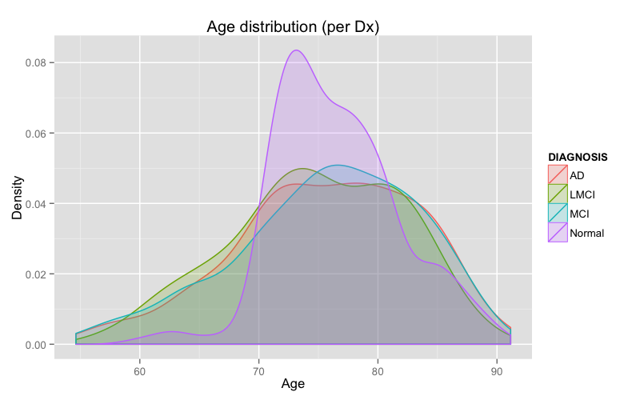

Total number of studies = 4423 (579 recalled).
Demographics for non-recalled studies:
ADNI1 Screening = 940 (m=544, f=396)
ADNI1 Baseline = 186 (m=126, f=60)
ADNI1/GO Month 6 = 810 (m=470, f=340)
ADNI1/GO Month 12 = 770 (m=451, f=319)
ADNI1/GO Month 18 = 256 (m=141, f=115)
ADNI1/GO Month 24 = 560 (m=300, f=260)
ADNI1/GO Month 36 = 320 (m=179, f=141)
(Other time descriptors are “Unscheduled” (index = 495) and “No Visit Defined” (index = 670).
Total number of studies = 4423 (579 recalled).
Demographics for non-recalled studies:
ADNI1 Screening ~1.5 T = 792, ~3.0 T = 148
ADNI1 Baseline ~1.5 T = 148, ~3.0 T = 38
ADNI1/GO Month 6 ~1.5 T = 650, ~3.0 T = 160
ADNI1/GO Month 12 ~1.5 T = 633, ~3.0 T = 137
ADNI1/GO Month 18 ~1.5 T = 213, ~3.0 T = 43
ADNI1/GO Month 24 ~1.5 T = 442, ~3.0 T = 118
ADNI1/GO Month 36 ~1.5 T = 248, ~3.0 T = 72
Number of Normal = 229 (m=110, f=119)
Number of MCI = 250 (m=92, f=158)
Number of LMCI = 151 (m=51, f=100)
Number of AD = 188 (m=89, f=99)
